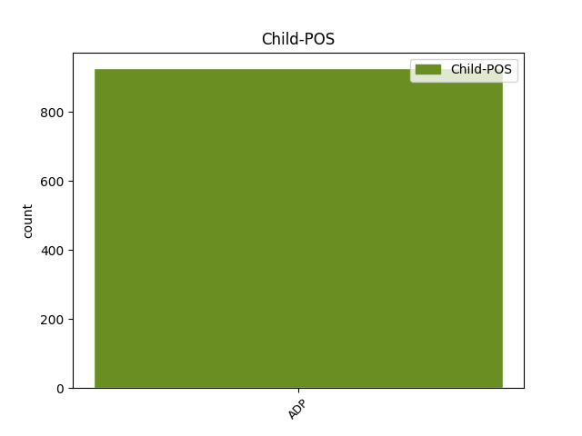

Distribution of features within this leaf



Agreement Rules sorted by frequency.
- When the dependent token is the modifer(mod) of the head token, and the head token is PRON and the dependent token is ADP.
1 De de ADP Spsa AdpType=Prep|Case=Acc 12 mod _ _
2 se _ _ _ _ 0 _ _ _
3 vor _ _ _ _ 0 _ _ _
4 afla _ _ _ _ 0 _ _ _
5 de _ _ _ _ 0 _ _ _
6 față _ _ _ _ 0 _ _ _
7 unii _ _ _ _ 0 _ _ _
8 ca _ _ _ _ 0 _ _ _
9 aceia _ _ _ _ 0 _ _ _
10 , _ _ _ _ 0 _ _ _
11 să _ _ _ _ 0 _ _ _
12 -i el PRON Pp3mpa--y-----w Case=Acc|Gender=Masc|Number=Plur|Person=3|PronType=Prs|Strength=Weak|Variant=Short 0 _ _ _
13 prindeți _ _ _ _ 0 _ _ _
14 și _ _ _ _ 0 _ _ _
15 să _ _ _ _ 0 _ _ _
16 -i _ _ _ _ 0 _ _ _
17 legați _ _ _ _ 0 _ _ _
18 . _ _ _ _ 0 _ _ _
1 Luxița _ _ _ _ 0 _ _ _
2 a _ _ _ _ 0 _ _ _
3 sărit _ _ _ _ 0 _ _ _
4 în _ _ _ _ 0 _ _ _
5 sus _ _ _ _ 0 _ _ _
6 și _ _ _ _ 0 _ _ _
7 a _ _ _ _ 0 _ _ _
8 rupt _ _ _ _ 0 _ _ _
9 -o el PRON Pp3fsa--y-----w Case=Acc|Gender=Fem|Number=Sing|Person=3|PronType=Prs|Strength=Weak|Variant=Short 0 _ _ _
10 de de ADP Spsa AdpType=Prep|Case=Acc 9 unk@fixed _ _
11 fugă _ _ _ _ 0 _ _ _
12 . _ _ _ _ 0 _ _ _
Disagree Examples:
1 Winston _ _ _ _ 0 _ _ _
2 detesta _ _ _ _ 0 _ _ _
3 aproape _ _ _ _ 0 _ _ _
4 orice _ _ _ _ 0 _ _ _
5 femeie femeie NOUN Ncfsrn Case=Acc,Nom|Definite=Ind|Gender=Fem|Number=Sing 0 _ _ _
6 și _ _ _ _ 0 _ _ _
7 mai _ _ _ _ 0 _ _ _
8 ales _ _ _ _ 0 _ _ _
9 pe pe ADP Spsa AdpType=Prep|Case=Acc 5 conj _ _
10 cele _ _ _ _ 0 _ _ _
11 tinere _ _ _ _ 0 _ _ _
12 și _ _ _ _ 0 _ _ _
13 drăguțe _ _ _ _ 0 _ _ _
14 . _ _ _ _ 0 _ _ _
1 Goldstein _ _ _ _ 0 _ _ _
2 era _ _ _ _ 0 _ _ _
3 un _ _ _ _ 0 _ _ _
4 renegat _ _ _ _ 0 _ _ _
5 și _ _ _ _ 0 _ _ _
6 un _ _ _ _ 0 _ _ _
7 decăzut _ _ _ _ 0 _ _ _
8 care _ _ _ _ 0 _ _ _
9 , _ _ _ _ 0 _ _ _
10 odată _ _ _ _ 0 _ _ _
11 , _ _ _ _ 0 _ _ _
12 cu _ _ _ _ 0 _ _ _
13 mult _ _ _ _ 0 _ _ _
14 timp _ _ _ _ 0 _ _ _
15 în _ _ _ _ 0 _ _ _
16 urmă _ _ _ _ 0 _ _ _
17 - _ _ _ _ 0 _ _ _
18 nimeni _ _ _ _ 0 _ _ _
19 nu _ _ _ _ 0 _ _ _
20 -și _ _ _ _ 0 _ _ _
21 mai _ _ _ _ 0 _ _ _
22 amintea _ _ _ _ 0 _ _ _
23 cu _ _ _ _ 0 _ _ _
24 siguranță _ _ _ _ 0 _ _ _
25 cât _ _ _ _ 0 _ _ _
26 anume _ _ _ _ 0 _ _ _
27 - _ _ _ _ 0 _ _ _
28 fusese _ _ _ _ 0 _ _ _
29 una _ _ _ _ 0 _ _ _
30 din _ _ _ _ 0 _ _ _
31 figurile figură NOUN Ncfpry Case=Acc,Nom|Definite=Def|Gender=Fem|Number=Plur 0 _ _ _
32 de de ADP Spsa AdpType=Prep|Case=Acc 31 mod _ _
33 frunte _ _ _ _ 0 _ _ _
34 ale _ _ _ _ 0 _ _ _
35 Partidului _ _ _ _ 0 _ _ _
36 , _ _ _ _ 0 _ _ _
37 aproape _ _ _ _ 0 _ _ _
38 la _ _ _ _ 0 _ _ _
39 același _ _ _ _ 0 _ _ _
40 nivel _ _ _ _ 0 _ _ _
41 cu _ _ _ _ 0 _ _ _
42 Fratele _ _ _ _ 0 _ _ _
43 cel _ _ _ _ 0 _ _ _
44 Mare _ _ _ _ 0 _ _ _
45 însuși _ _ _ _ 0 _ _ _
46 , _ _ _ _ 0 _ _ _
47 dar _ _ _ _ 0 _ _ _
48 pe _ _ _ _ 0 _ _ _
49 urmă _ _ _ _ 0 _ _ _
50 se _ _ _ _ 0 _ _ _
51 angajase _ _ _ _ 0 _ _ _
52 în _ _ _ _ 0 _ _ _
53 activități _ _ _ _ 0 _ _ _
54 contrarevoluționare _ _ _ _ 0 _ _ _
55 , _ _ _ _ 0 _ _ _
56 fusese _ _ _ _ 0 _ _ _
57 condamnat _ _ _ _ 0 _ _ _
58 la _ _ _ _ 0 _ _ _
59 moarte _ _ _ _ 0 _ _ _
60 dar _ _ _ _ 0 _ _ _
61 , _ _ _ _ 0 _ _ _
62 nu _ _ _ _ 0 _ _ _
63 se _ _ _ _ 0 _ _ _
64 știe _ _ _ _ 0 _ _ _
65 cum _ _ _ _ 0 _ _ _
66 , _ _ _ _ 0 _ _ _
67 scăpase _ _ _ _ 0 _ _ _
68 și _ _ _ _ 0 _ _ _
69 dispăruse _ _ _ _ 0 _ _ _
70 ca _ _ _ _ 0 _ _ _
71 prin _ _ _ _ 0 _ _ _
72 minune _ _ _ _ 0 _ _ _
73 . _ _ _ _ 0 _ _ _
1 Avea _ _ _ _ 0 _ _ _
2 o _ _ _ _ 0 _ _ _
3 față _ _ _ _ 0 _ _ _
4 prelungă _ _ _ _ 0 _ _ _
5 și _ _ _ _ 0 _ _ _
6 osoasă _ _ _ _ 0 _ _ _
7 de _ _ _ _ 0 _ _ _
8 evreu _ _ _ _ 0 _ _ _
9 , _ _ _ _ 0 _ _ _
10 cu _ _ _ _ 0 _ _ _
11 o _ _ _ _ 0 _ _ _
12 coamă _ _ _ _ 0 _ _ _
13 de _ _ _ _ 0 _ _ _
14 păr _ _ _ _ 0 _ _ _
15 alb _ _ _ _ 0 _ _ _
16 , _ _ _ _ 0 _ _ _
17 ca _ _ _ _ 0 _ _ _
18 o _ _ _ _ 0 _ _ _
19 aureolă _ _ _ _ 0 _ _ _
20 , _ _ _ _ 0 _ _ _
21 și _ _ _ _ 0 _ _ _
22 o _ _ _ _ 0 _ _ _
23 barbă _ _ _ _ 0 _ _ _
24 micuță _ _ _ _ 0 _ _ _
25 , _ _ _ _ 0 _ _ _
26 ca _ _ _ _ 0 _ _ _
27 de _ _ _ _ 0 _ _ _
28 țap _ _ _ _ 0 _ _ _
29 ; _ _ _ _ 0 _ _ _
30 o _ _ _ _ 0 _ _ _
31 figură _ _ _ _ 0 _ _ _
32 inteligentă _ _ _ _ 0 _ _ _
33 și _ _ _ _ 0 _ _ _
34 , _ _ _ _ 0 _ _ _
35 totuși _ _ _ _ 0 _ _ _
36 , _ _ _ _ 0 _ _ _
37 eminamente _ _ _ _ 0 _ _ _
38 demnă demn ADJ Afpfsrn Case=Acc,Nom|Definite=Ind|Degree=Pos|Gender=Fem|Number=Sing 0 _ _ _
39 de de ADP Spsa AdpType=Prep|Case=Acc 38 udep@pmod _ _
40 dispreț _ _ _ _ 0 _ _ _
41 ; _ _ _ _ 0 _ _ _
42 purta _ _ _ _ 0 _ _ _
43 o _ _ _ _ 0 _ _ _
44 pereche _ _ _ _ 0 _ _ _
45 de _ _ _ _ 0 _ _ _
46 ochelari _ _ _ _ 0 _ _ _
47 proptiți _ _ _ _ 0 _ _ _
48 pe _ _ _ _ 0 _ _ _
49 vârful _ _ _ _ 0 _ _ _
50 nasului _ _ _ _ 0 _ _ _
51 , _ _ _ _ 0 _ _ _
52 care _ _ _ _ 0 _ _ _
53 -i _ _ _ _ 0 _ _ _
54 dădeau _ _ _ _ 0 _ _ _
55 o _ _ _ _ 0 _ _ _
56 înfățișare _ _ _ _ 0 _ _ _
57 de _ _ _ _ 0 _ _ _
58 prostie _ _ _ _ 0 _ _ _
59 senilă _ _ _ _ 0 _ _ _
60 . _ _ _ _ 0 _ _ _
1 Și _ _ _ _ 0 _ _ _
2 în _ _ _ _ 0 _ _ _
3 tot _ _ _ _ 0 _ _ _
4 timpul _ _ _ _ 0 _ _ _
5 ăsta _ _ _ _ 0 _ _ _
6 , _ _ _ _ 0 _ _ _
7 ca _ _ _ _ 0 _ _ _
8 să _ _ _ _ 0 _ _ _
9 nu _ _ _ _ 0 _ _ _
10 aibă _ _ _ _ 0 _ _ _
11 nimeni _ _ _ _ 0 _ _ _
12 nici _ _ _ _ 0 _ _ _
13 cel _ _ _ _ 0 _ _ _
14 mai _ _ _ _ 0 _ _ _
15 mic _ _ _ _ 0 _ _ _
16 dubiu _ _ _ _ 0 _ _ _
17 asupra _ _ _ _ 0 _ _ _
18 realității _ _ _ _ 0 _ _ _
19 pe _ _ _ _ 0 _ _ _
20 care _ _ _ _ 0 _ _ _
21 o _ _ _ _ 0 _ _ _
22 acopereau _ _ _ _ 0 _ _ _
23 lătrăturile _ _ _ _ 0 _ _ _
24 viclene _ _ _ _ 0 _ _ _
25 ale _ _ _ _ 0 _ _ _
26 lui _ _ _ _ 0 _ _ _
27 Goldstein _ _ _ _ 0 _ _ _
28 , _ _ _ _ 0 _ _ _
29 în _ _ _ _ 0 _ _ _
30 spatele _ _ _ _ 0 _ _ _
31 lui _ _ _ _ 0 _ _ _
32 , _ _ _ _ 0 _ _ _
33 pe _ _ _ _ 0 _ _ _
34 tele-ecran _ _ _ _ 0 _ _ _
35 , _ _ _ _ 0 _ _ _
36 mărșăluiau _ _ _ _ 0 _ _ _
37 interminabile _ _ _ _ 0 _ _ _
38 coloane _ _ _ _ 0 _ _ _
39 ale _ _ _ _ 0 _ _ _
40 armatei _ _ _ _ 0 _ _ _
41 eurasiene _ _ _ _ 0 _ _ _
42 - _ _ _ _ 0 _ _ _
43 rânduri _ _ _ _ 0 _ _ _
44 peste _ _ _ _ 0 _ _ _
45 rânduri _ _ _ _ 0 _ _ _
46 de _ _ _ _ 0 _ _ _
47 bărbați _ _ _ _ 0 _ _ _
48 solizi _ _ _ _ 0 _ _ _
49 , _ _ _ _ 0 _ _ _
50 cu _ _ _ _ 0 _ _ _
51 fețe _ _ _ _ 0 _ _ _
52 asiatice _ _ _ _ 0 _ _ _
53 imobile _ _ _ _ 0 _ _ _
54 , _ _ _ _ 0 _ _ _
55 care _ _ _ _ 0 _ _ _
56 veneau _ _ _ _ 0 _ _ _
57 în _ _ _ _ 0 _ _ _
58 valuri _ _ _ _ 0 _ _ _
59 până _ _ _ _ 0 _ _ _
60 la _ _ _ _ 0 _ _ _
61 suprafața _ _ _ _ 0 _ _ _
62 ecranului _ _ _ _ 0 _ _ _
63 și _ _ _ _ 0 _ _ _
64 pe _ _ _ _ 0 _ _ _
65 urmă _ _ _ _ 0 _ _ _
66 dispăreau _ _ _ _ 0 _ _ _
67 pentru _ _ _ _ 0 _ _ _
68 a _ _ _ _ 0 _ _ _
69 fi _ _ _ _ 0 _ _ _
70 înlocuite _ _ _ _ 0 _ _ _
71 de _ _ _ _ 0 _ _ _
72 altele altul PRON Pi3fpr Case=Acc,Nom|Gender=Fem|Number=Plur|Person=3|PronType=Ind 0 _ _ _
73 exact _ _ _ _ 0 _ _ _
74 la la ADP Spsa AdpType=Prep|Case=Acc 72 mod _ _
75 fel _ _ _ _ 0 _ _ _
76 . _ _ _ _ 0 _ _ _
1 Era _ _ _ _ 0 _ _ _
2 una _ _ _ _ 0 _ _ _
3 și _ _ _ _ 0 _ _ _
4 pe _ _ _ _ 0 _ _ _
5 fațada _ _ _ _ 0 _ _ _
6 casei casă NOUN Ncfsoy Case=Dat,Gen|Definite=Def|Gender=Fem|Number=Sing 0 _ _ _
7 de de ADP Spsa AdpType=Prep|Case=Acc 6 mod _ _
8 vizavi _ _ _ _ 0 _ _ _
9 . _ _ _ _ 0 _ _ _